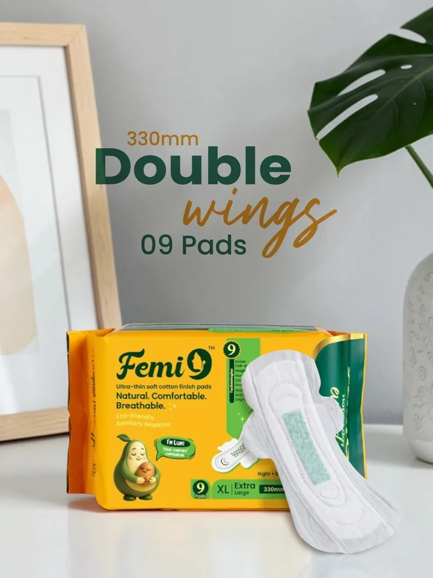
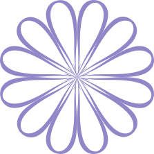
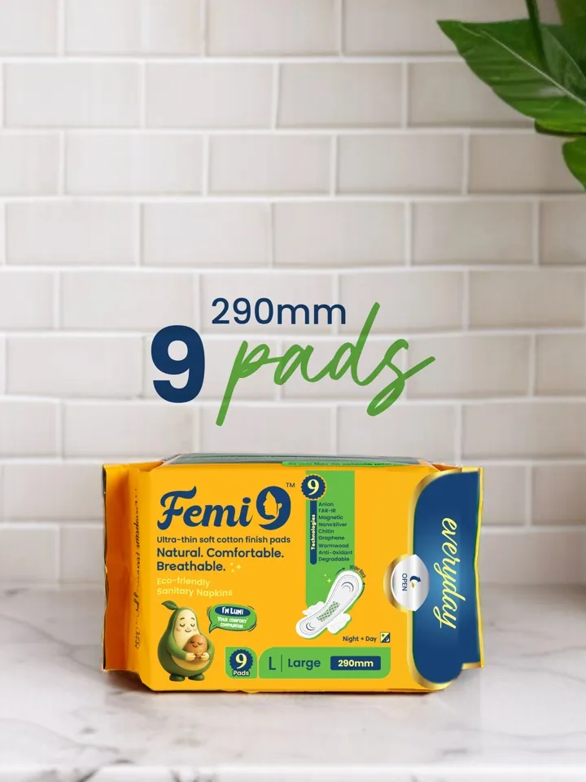
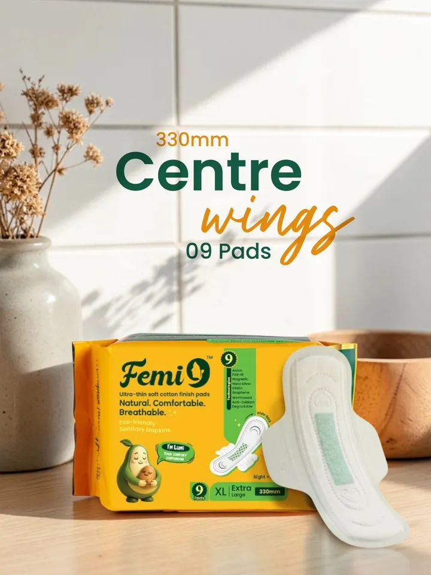
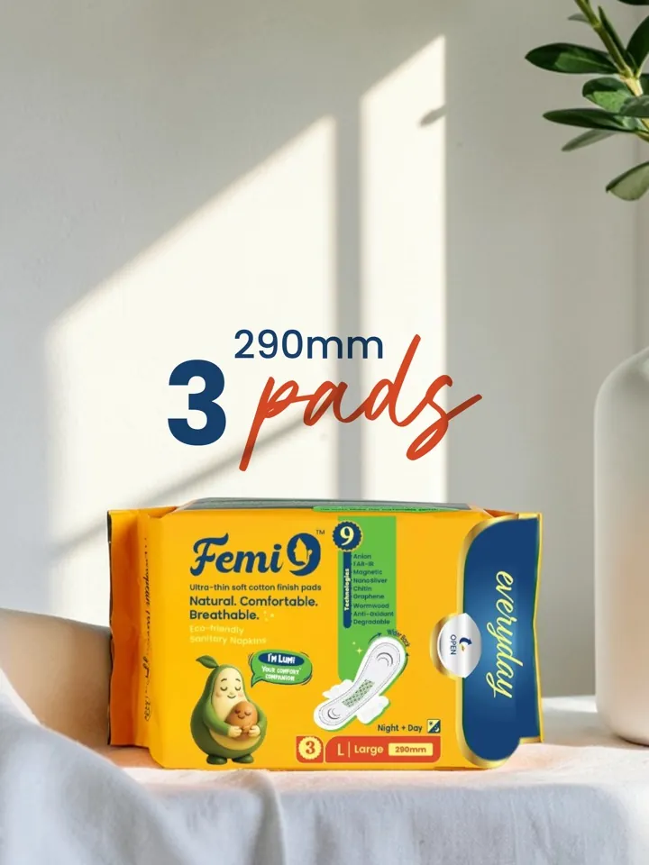
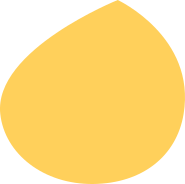

Heavy · Night + Day
330mm Double Wings
Extra-length with double wings for overnight security.
Rs.2259 pads · 330mm

Ultra-Thin, Breathable Cotton Pads With A Mood-Lifting Anion Strip. Toxin-Free, Biodegradable, And Made For Real Life

Buy Now
Every body is different. Whether you experience light flow, regular flow, or heavy flow periods, Femi9 has a sanitary pad designed just for you.
Choose the pad size and protection level that matches your flow, then shop with confidence and comfort in mind.

Extra-length with double wings for overnight security.

The everyday large. Nine pads for a full, comfy cycle.


Why Femi9
Knowledge, Care, And Confidence - Everything You Need To Understand Your Body Better.
A gentle, soft surface that feels nice against your skin throughout your period.
Airflow-friendly layers that help reduce trapped heat and keep you fresher, longer.
Designed to absorb quickly and keep you protected through regular and heavier flow days.

Thoughtfully made for women who want gentle, comfortable pads without unnecessary irritants.
Stay feeling fresh and confident, whether you're at work, traveling, or resting.
A lightweight fit that supports freedom of movement—focus on your day, not your pad.
Femi9 was created with one simple purpose: to make period care more comfortable, thoughtful, and reliable. We design our sanitary pads around what real women need—softness against your skin, breathable comfort that actually works, absorbency you can count on, and protection you can trust.
Beyond just products, Femi9 is about encouraging better menstrual hygiene choices, building awareness, and giving women the confidence they deserve throughout their cycle.
Know More About Femi9
Blogs
Knowledge, Care, And Confidence - Everything You Need To Understand Your Body Better.
A gentle, private tracker. Tell us three things to see when your next period is likely to arrive — and if you are signed in with cycle tracking on, we will keep it with your account.
Testimonial

“Forget I’m Wearing One. And Zero Rash.”

“Switched The Whole Family. Zero Leaks Overnight.”

“The First Pad That Didn’t Irritate My Skin At All.”

“Overnight 425 Is A Game-Changer.”
“Forget I’m Wearing One. And Zero Rash.”
“Switched The Whole Family. Zero Leaks Overnight.”
“The First Pad That Didn’t Irritate My Skin At All.”
“Overnight 425 Is A Game-Changer.”
Join 5,000+ Women Across Tamil Nadu Earning A Real Income By Bringing Trusted, Organic Period Care To The People They Already Know.